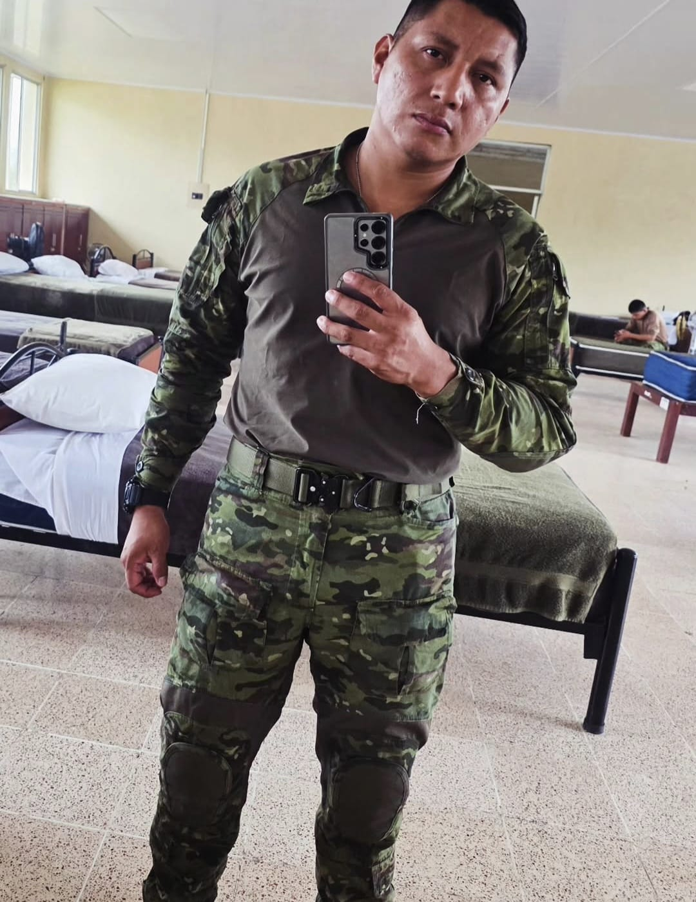

Hay presencias que no hacen ruido,
pero dejan marca.
Como la tuya…
firme, serena, imposible de ignorar.
Entre disciplina y coraje,
también habita algo más suave,
algo que no se entrena…
pero que se siente.
Hoy (aunque tarde),celebro eso:
no solo lo que haces,
sino lo que eres cuando nadie mira.
Celebro tu risa, que ilumina sin esfuerzo,
y esa forma tuya de ser… tan única,
tan imposible de ignorar.
Porque hay personas que pasan,
y hay personas que dejan huella,
y tú… haces que el mundo se detenga un segundo más.
Que la vida te devuelva
en calma todo lo que das en fuerza,
y en momentos memorables
todo lo que entregas en silencio.
Feliz cumpleaños -mejor tarde que nunca-.
